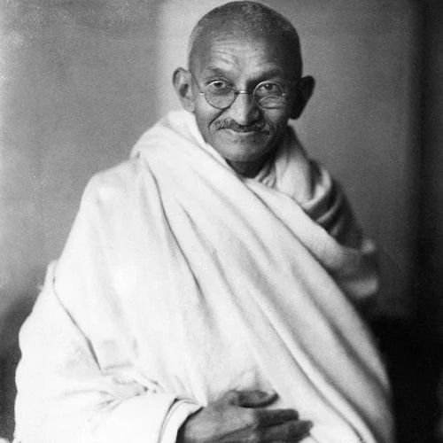
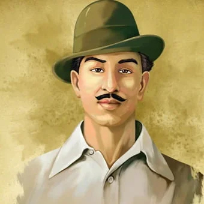
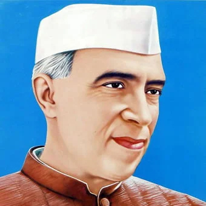
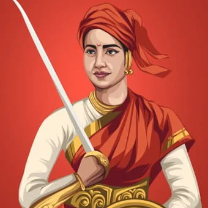
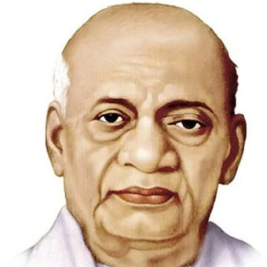

Mahatma Gandhi (born October 2, 1869, Porbandar, India—died January 30, 1948, Delhi) was an Indian lawyer, politician, social activist, and writer who became the leader of the Indian Independence Movement against British rule. As such, he came to be considered the father of his country. Gandhi is internationally esteemed for his doctrine of nonviolent protest (satyagraha) to achieve political and social progress.
In the eyes of millions of his fellow Indians, Gandhi was the Mahatma (“Great Soul”). The unthinking adoration of the huge crowds that gathered to see him all along the route of his tours made them a severe ordeal; he could hardly work during the day or rest at night. “The woes of the Mahatmas,” he wrote, “are known only to the Mahatmas.” His fame spread worldwide during his lifetime and only increased after his death. The name Mahatma Gandhi is now one of the most universally recognized on earth.
Mahatma Gandhi stands as the cornerstone of India’s Top 10 freedom fighters, an emblematic figure in the country’s quest for independence. His leadership in championing nonviolence and civil disobedience galvanized a movement that transcended borders, leaving an indelible mark on the world.Going beyond political realms, Gandhi’s philosophy embraced social reforms and economic self-sufficiency. His teachings underscored the significance of harmony, truth, and self-discipline. His relentless endeavors to nurture communal harmony and eradicate untouchability showcased his vision of a fair and just society.Despite facing adversity, Gandhi’s unwavering commitment to nonviolence defined his stance. His influence surpassed borders, igniting movements for civil rights and social justice across the globe. Gandhi’s legacy remains a powerful testament to the transformative potential of peaceful resistance and the enduring quest for justice.
Bhagat Singh (born September 27, 1907, Lyallpur, western Punjab, India [now in Pakistan]—died March 23, 1931, Lahore [now in Pakistan]) was a revolutionary hero of the Indian independence movement.
Bhagat Singh attended Dayanand Anglo Vedic High School, which was operated by Arya Samaj (a reform sect of modern Hinduism), and then National College, both located in Lahore. He began to protest British rule in India while still a youth and soon fought for national independence. He also worked as a writer and editor in Amritsar for Punjabi- and Urdu-language newspapers espousing Marxist theories. He is credited with popularizing the catchphrase “Inquilab zindabad” (“Long live the revolution”).
In 1928 Bhagat Singh plotted with others to kill the police chief responsible for the death of Indian writer and politician Lala Lajpat Rai, one of the founders of National College, during a silent march opposing the Simon Commission. Instead, in a case of mistaken identity, junior officer J.P. Saunders was killed, and Bhagat Singh had to flee Lahore to escape the death penalty. In 1929 he and an associate lobbed a bomb at the Central Legislative Assembly in Delhi to protest the implementation of the Defence of India Act and then surrendered. He was hanged at the age of 23 for the murder of Saunders.


Jawaharlal Nehru, (born Nov. 14, 1889, Allahabad, India—died May 27, 1964, New Delhi), First prime minister of independent India (1947–64). Son of the independence advocate Motilal Nehru (1861–1931), Nehru was educated at home and in Britain and became a lawyer in 1912.
More interested in politics than law, he was impressed by Mohandas K. Gandhi’s approach to Indian independence. His close association with the Indian National Congress began in 1919; in 1929 he became its president, presiding over the historic Lahore session that proclaimed complete independence (rather than dominion status) as India’s political goal. He was imprisoned nine times between 1921 and 1945 for his political activity. When India was granted limited self-government in 1935, the Congress Party under Nehru refused to form coalition governments with the Muslim League in some provinces; the hardening of relations between Hindus and Muslims that followed ultimately led to the partition of India and the creation of Pakistan. Shortly before Gandhi’s assassination in 1948, Nehru became the first prime minister of independent India. He attempted a foreign policy of nonalignment during the Cold War, drawing harsh criticism if he appeared to favour either camp. During his tenure, India clashed with Pakistan over the Kashmir region and with China over the Brahmaputra River valley. He wrested Goa from the Portuguese. Domestically, he promoted democracy, socialism, secularism, and unity, adapting modern values to Indian conditions. His daughter, Indira Gandhi, became prime minister two years after his death.
Rani Laxmibai also called the Rani of Jhansi was a pivotal figure in the Indian Revolt of 1857. She is also regarded as one of the greatest freedom fighters in India.
Rani Lakshmibai was born on 19 November 1828 in the town of Varanasi. She was named Manikarnika Tambe and was nicknamed Manu. Her father was Moropant Tambe and her mother was Bhagirathi Sapre (Bhagirathi Bai); they hailed from modern-day Maharashtra. At four years old her mother passed away. Her father was the Commander of War under Peshwa Baji Rao II of Bithorr District. Rani Laxmi Bai was educated at home, able to read and write, and was more independent in her childhood than others of her age; her studies included shooting, horsemanship, and fencing which was in contrast to the cultural expectations for women in Indian society at the time.
At the age of 14, she was married to the Maharaja of Jhansi, Gangadhar Rao in 1842.
After her marriage, she was called Laxmibai.
Rani Lakshmi Bai’s son Damodar Rao was born in 1851. But he died after four months.
Gangadhar Rao died in 1853. Before he died, he had adopted his cousin’s son Anand Rao, who was renamed, Damodar Rao.


Vallabhbhai Patel, known as Sardar Patel, (born Oct. 31, 1875, Nadiad, Gujarat, India—died Dec. 15, 1950, Bombay), Indian statesman. Educated in India, he set up his own law office in 1900 and later studied law in Britain; he did not become involved in politics until 1917.
Like Mohandas K. Gandhi (and unlike Jawaharlal Nehru), he advocated dominion status within the British Commonwealth rather than independence for India. He opposed armed struggle on practical rather than moral grounds, and he was not interested in Hindu-Muslim unity. Patel was repeatedly a candidate for the presidency of the Indian National Congress, but his uncompromising attitude toward the Indian Muslims cost him Gandhi’s support and, ultimately, the presidency. After Indian independence (1947), he held several cabinet positions. He is remembered for achieving the peaceful integration of the princely Indian states into the Indian union and the political unification of India.
Broadly based political party of India, founded in 1885. The Congress Party was a moderate reform party until 1917, when it was taken over by its “extremist” Home Rule wing (see Bal Gangadhar Tilak). In the 1920s and ’30s, under Mohandas K. Gandhi, it promoted noncooperation to protest the feebleness of the constitutional reforms of 1919. During World War II, the party announced that India would not support the war until granted complete independence. In 1947 an Indian independence bill became law, and in 1950 the constitution took effect. Jawaharlal Nehru dominated the party from 1951 to 1964.